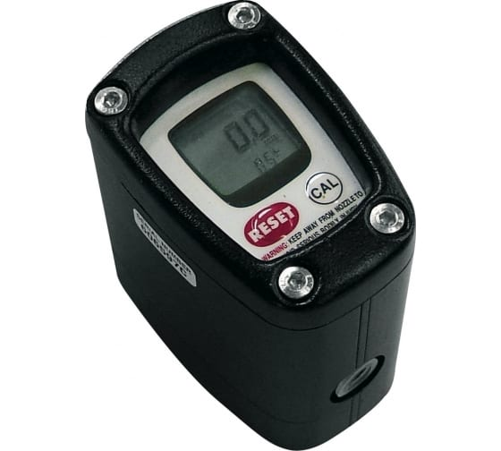

Электронный счетчик топлива Piusi К200
PIUSI (Италия)
Раздел: с электронной индикацией · АЗС
Цена и наличие — по запросу. Поставляем оригинал и аналоги. Доставка по России.
Описание
Электронный счетчик топлива Piusi К200 производства PIUSI (Италия) — позиция из раздела «с электронной индикацией» для АЗС. Компания SYNDICAT поставляет оборудование и комплектующие для автозаправочных и газозаправочных станций по всей России. Цена и наличие «Электронный счетчик топлива Piusi К200» — по запросу: оставьте заявку или позвоните, подберём оригинал или аналог и рассчитаем доставку.